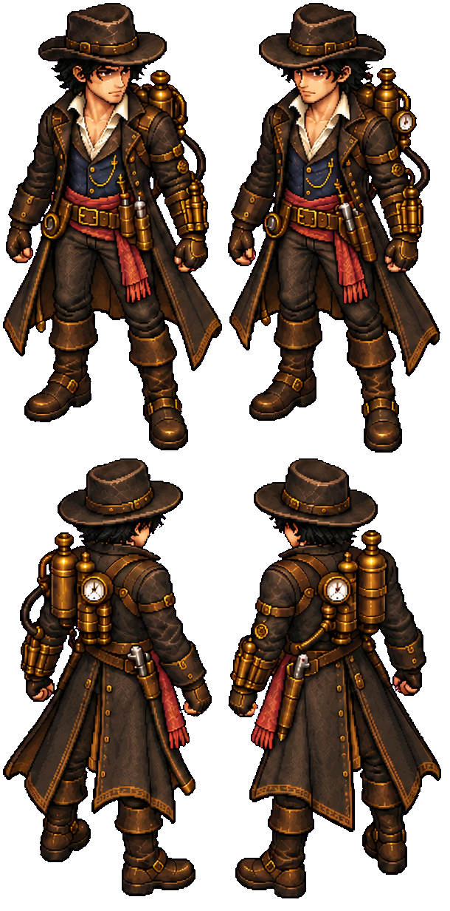CharactersCaptain Michael610 × 1232 · see metadata4 standing directions. Walk, attack, hit and death animation missing.PNGMetadataSHA-256c5c327bd652773cd0114ecc1920bf63fcfaef0c0301239eb61926b3fe236cdd9
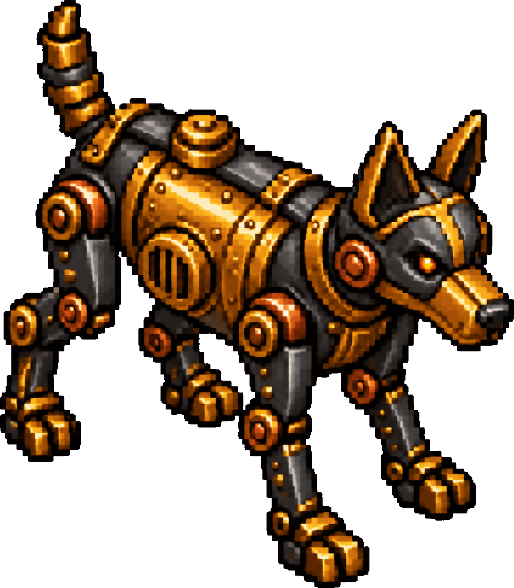Charactersmichael.mechanical dog · machine1022 × 1132 · pivot [520, 925]One standing pose. Directional action sheets missing.PNGMetadataSHA-25602824c80f25292ed1d77f461938e92b8ac901a553e9e94571fad751511a85e23
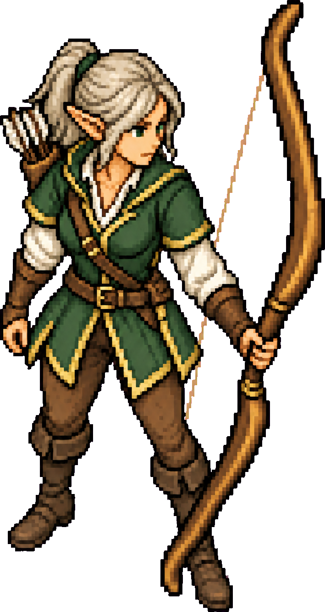Characterselven.bow warden · female709 × 1333 · pivot [269, 1253]One standing pose. Directional action sheets missing.PNGMetadataSHA-2569bbbf5c51fcdb9f5021bedf2cf60edf5375c35225e02d0378f91202cf617a39f
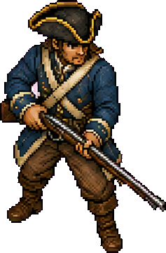Characterscolonial.line marine · male237 × 361 · pivot [116, 361]One standing pose. Directional action sheets missing.PNGMetadataSHA-256f3387eebf2347ada624bad61cf09e4219bf042e1133cc4cc98ac29b393ed6633
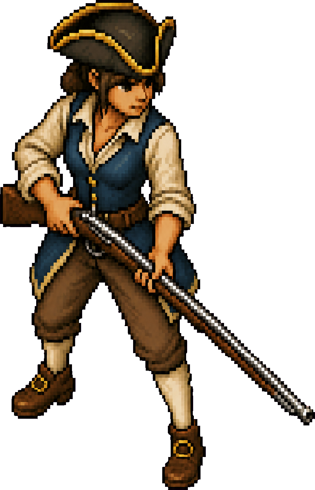Characterscolonial.line marine · female897 × 1396 · pivot [310, 1280]One standing pose. Directional action sheets missing.PNGMetadataSHA-2563db289136406d38b5bf2e35e9c07e90ac67c5f9ced1010c8b781b096e4d16295
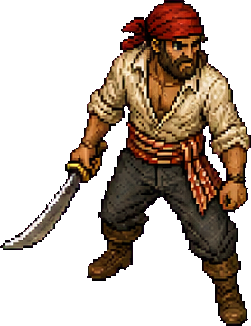Characterspirates.deckhand · male278 × 362 · pivot [143, 362]One standing pose. Directional action sheets missing.PNGMetadataSHA-2567ca007f7f47663e0aa124bb9be2a6b936e2151e8c78bbda5b758370a9dca176a
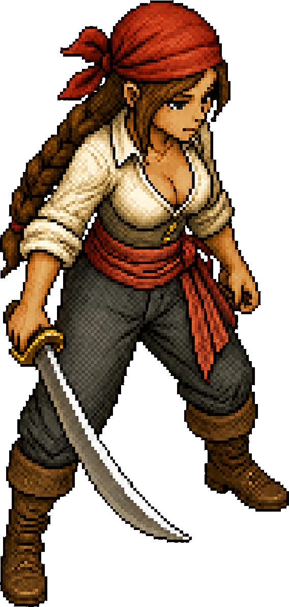Characterspirates.deckhand · female568 × 1190 · pivot [302, 1080]One standing pose. Directional action sheets missing.PNGMetadataSHA-25652326f77901ee1d4643359d32fea47e25915bfd9146fd3e667b8e66b0c5afc19
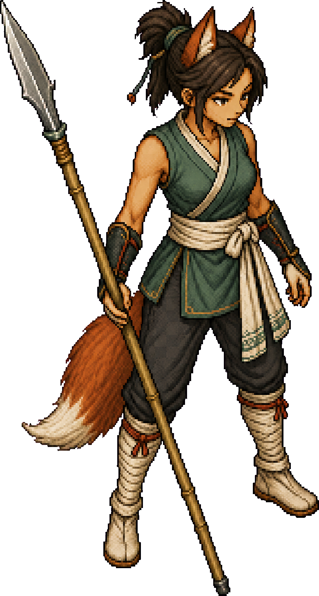Characterseastern fox people.spear skirmisher · female781 × 1456 · pivot [500, 1300]One standing pose. Directional action sheets missing.PNGMetadataSHA-25672614967d92697725b14731ff0cd49c6caffa81d98a8447fe3a3568ac1aeb672
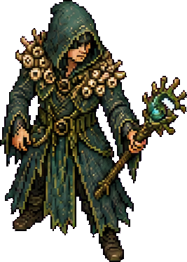Characterscthulhu.drowned cultist · male267 × 373 · pivot [127, 373]One standing pose. Directional action sheets missing.PNGMetadataSHA-2567cc35e7768aebc99046cb68aa87c80bbd4c7c732f9a0a306843340d0329e62d0
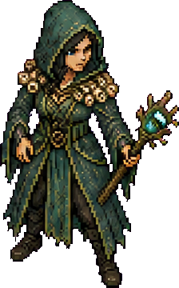Characterscthulhu.drowned cultist · female224 × 360 · pivot [84, 340]One standing pose. Directional action sheets missing.PNGMetadataSHA-2562929cb62163b3450b7f4b586f954a909a7f4ffcf86de9fca016c45cb400783a8
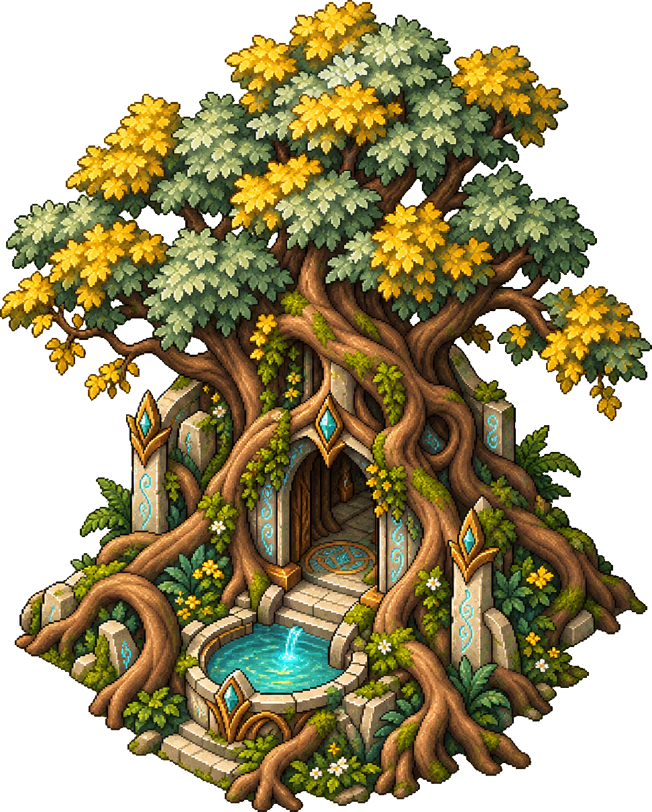Buildingselven.heart grove972 × 1211 · pivot [350, 1100]Static building cutout; collision is separate.PNGMetadataSHA-2567283ea1a91b11e65be6dc2a50c22ebe0367fd1bed7cede8ecc259295719b9936
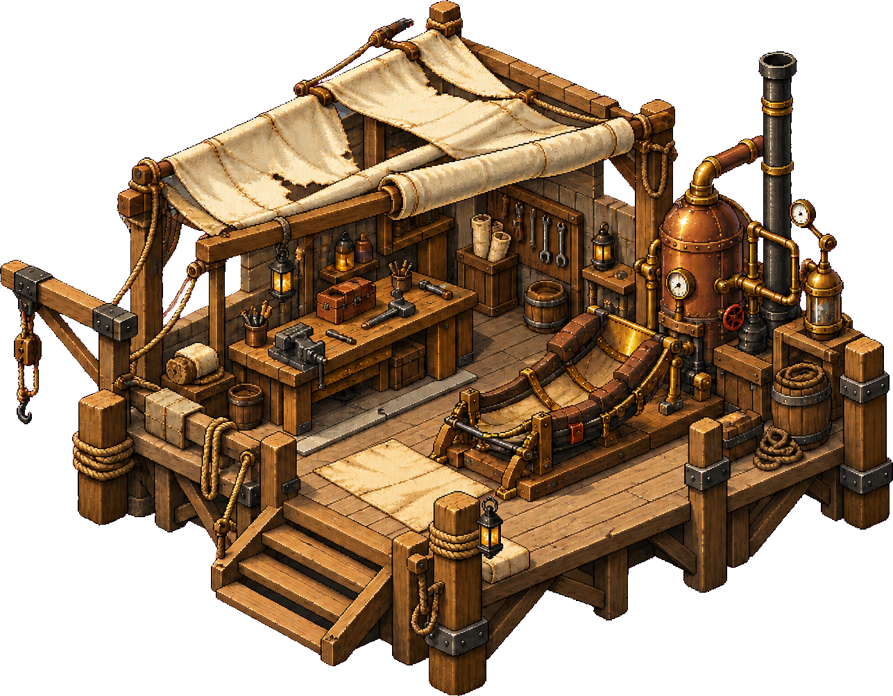Buildingsmichael.field workshop1287 × 1004 · pivot [405, 910]Static building cutout; collision is separate.PNGMetadataSHA-256d1380c98922aaaa953242b921dfcdae05f1527cb268b721c0ae5574fba1f5718
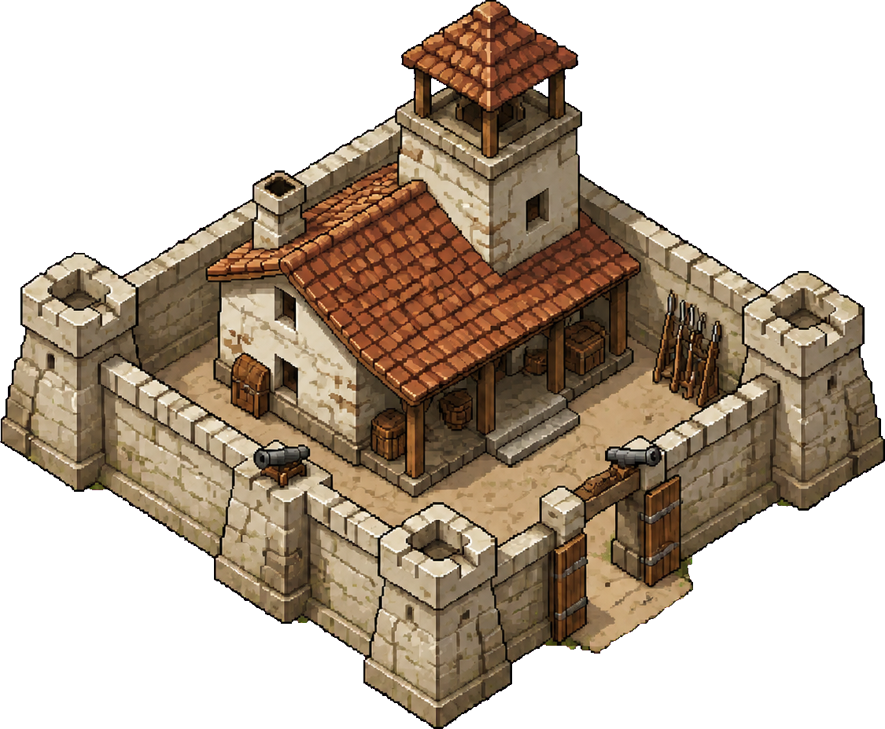Buildingscolonial.watch fort1125 × 928 · pivot [775, 825]Static building cutout; collision is separate.PNGMetadataSHA-25634c8f250350f73f4cb6ae78c82a7bf9aca4266040a221d60e40e9f2527494c56
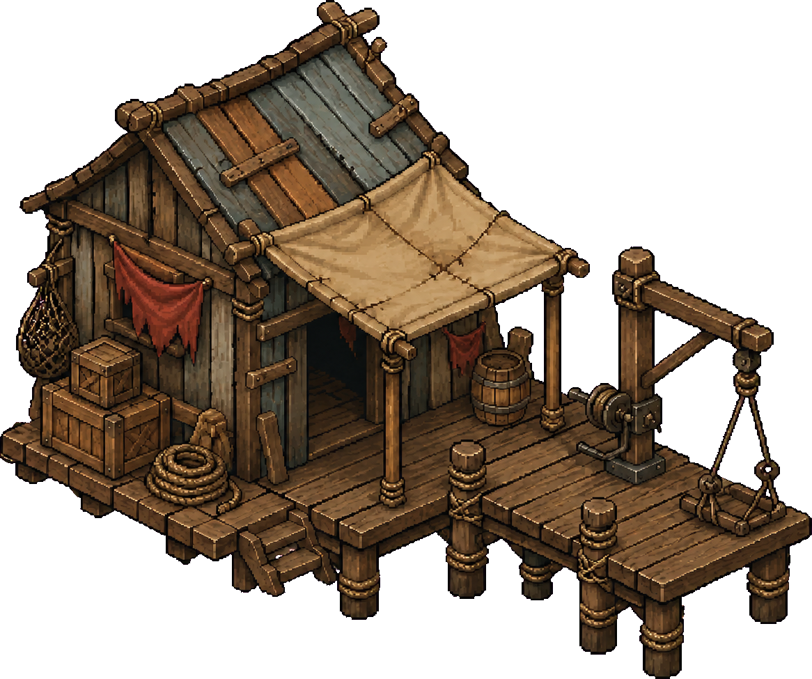Buildingspirates.tide quay1166 × 975 · pivot [360, 805]Static building cutout; collision is separate.PNGMetadataSHA-256f9bc0ea135cc5a03959c7478a51103b3e6901830cec482e830088536b14be2d7
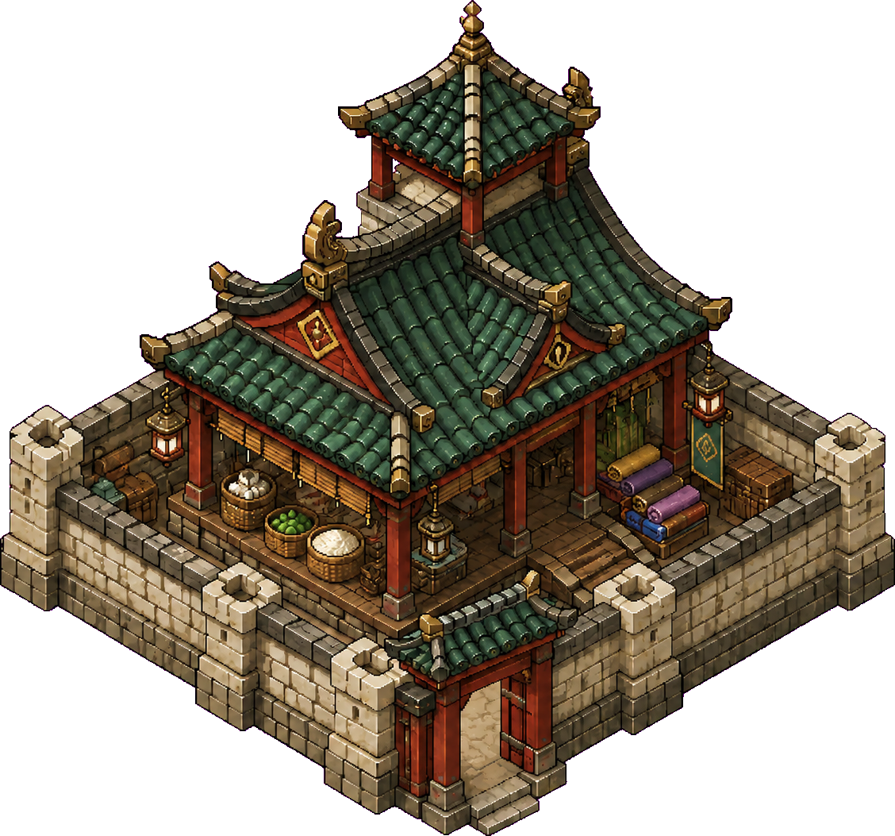Buildingseastern fox people.river market1128 × 1053 · pivot [630, 1020]Static building cutout; collision is separate.PNGMetadataSHA-256883e48fa10f6702bfd8258d95f68da20d0d2cc4c398da931386898b750ff1c36
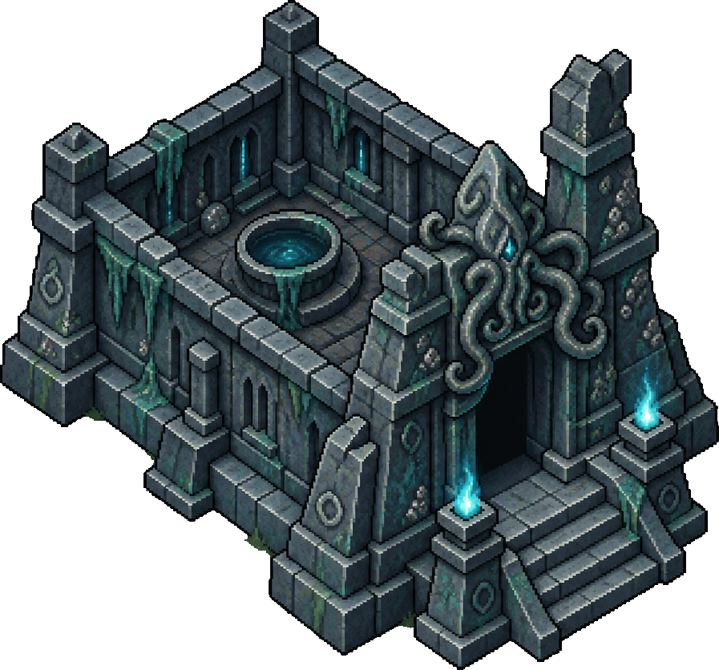Buildingscthulhu.drowned shrine897 × 836 · pivot [690, 800]Static building cutout; collision is separate.PNGMetadataSHA-256804377de550667198f2b995d9c729d9991d4460738bc0596760fe31f2001675b
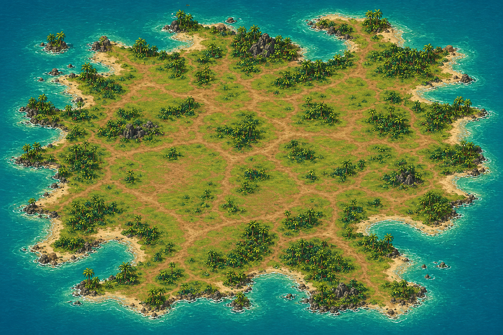TerrainIsland terrain1536 × 1024 · see metadataCurrent island background; navigation is separate.PNGMetadataSHA-2565b5af8b60df58e402ec69f9d6788ee788c60238ebc68fd38d60654e7583cf976
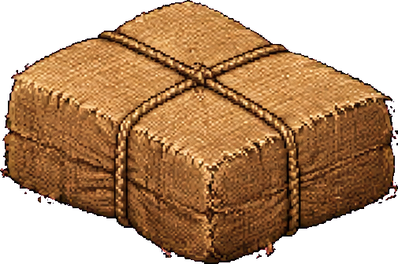PropsSalvage505 × 336 · pivot [252, 304]Static pickup cutout.PNGSHA-2568911b0430334effaa432f3460353414a8d4d3ac4c589b9bed457a6e2a1b6125c